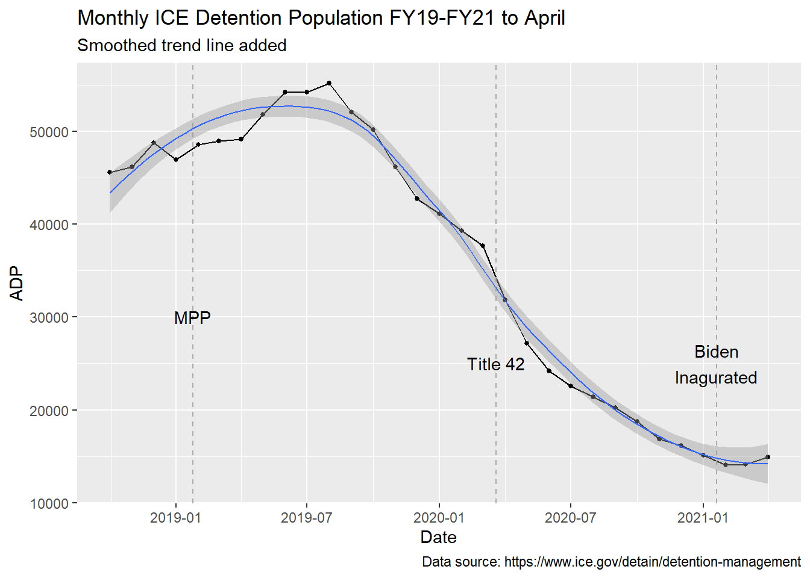
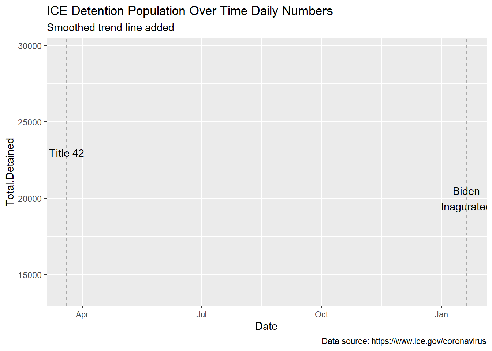

ICE ADP
immigration
This post is an exploration of immigration detention average daily population over time. Particular attention is given to the period represented by the COVID-19 pandemic.
Introduction
This document examines immigration detention average daily population (ADP) from the period 1979 to April 2021. This time frame spans the beginnings of the contemporary period of immigration detention in 1980 (Arthur C. Helton 1984; Arthur C. Helton 1986a), the official policy of prevention through deterrence [@u.sborderpatrol1994; Nevins (2002); Dunn (2009)], the rise of crimmigration (Stumpf 2006a), the post-911 transformation of the Immigration and Naturalization Service (INS) from being under the Department of Justice (DOJ) to Immigration and Customs Enforcement (ICE) under the Department of Homeland Security (DHS) (Bush 2002), and finally the COVID-19 pandemic (Hooks and Libal 2020; Ghandehari and Viera 2020). Particular attention is paid to the rapid rise in detention during the first years of Trump administration followed by the largest ever decline in immigration detention which occurred during the final year of the Trump administration.
Brief History of the Current Immigration Detention System
Immigration detention was invented in the United States at Ellis Island in 1891 [Wilsher (2011): 13]. Many scholars have observed that this immigration station, as well as Angel Island which opened in 1910 (Barde and Bobonis 2006; Lai 1978; Daniels 1997), were sites where racist and eugenical immigration policy played out (Dolmage 2011). For example, immigration law at the time prohibited the entry of Chinese persons, individuals with mental illness, or those who did not conform to heteronormative standards (Dolmage 2011). In 1954 Ellis Island closed as an immigration inspection station and with it practice of detaining arriving individuals was (for a time) disbanded (“The Closing of Ellis Island” 1955; Simon 1998). However, it is important to note that the detention of non-citizens (and in some cases citizens) for immigration purposes via interior enforcement increased markedly that same year [Swing (1954): 31, 36; Lytle Hernández (2006): 50-51].
Caribbean Refugees and the Modern Detention System
Today, the US has the largest immigration detention system of any country and much of it is managed by private prison contractors. How did this modern system come into being? In the summer of 1980, on the heels of signing the landmark Refugee Act, the Carter administration once again began detaining arriving individuals–in this case Cubans and Haitians arriving to Miami by boat (Arthur C. Helton 1984; Arthur C. Helton 1986b; Lindskoog 2018). This initially ad hoc shift in policy ushered in the current period of immigration detention. Between May 20 and July 31, 1981, six months into the Reagan administration all Haitians arriving by boat to southern Florida without entry documents were detained at Camp Krome [Arthur C. Helton (1986b): 133], a repurposed cold war Nike missile base (Lipman 2013).
This blanket change in detention policy was instigated without formal rule making and the INS was sued over the matter in the Southern District of Florida. District Judge Spellman cited precedent regarding inherent powers in international relations but ruled that the policy was implemented in a way that violated the Administrative Procedures Act and that 1800 Haitians should be released [Arthur C. Helton (1986b): 133] but Judge Spellman denied the claim that the policy was discriminatory. In July of 1982, in the Federal Register, the INS and DOJ published the new interim rule effective immediately, suspending the normal 30 day publication requirement (Immigration and Naturalization Service and Department of Justice 1982a). The INS argued that rule was exempt from normal procedures due to an “emergency situation which exists by virtue of a mass influx of illegal aliens” [Immigration and Naturalization Service and Department of Justice (1982a), 30045]. The final rule was implemented shortly following (Immigration and Naturalization Service and Department of Justice 1982b), with little consideration of public comments that expressed substantive concerns over the new policy. Thus in 1981, contemporary immigration detention was hastily crafted under a “state of exception” (Agamben 2005) and similar emergency exceptions have been cited throughout this institutions history. For example, both the Migrant Protection Protocols and Title 42 expulsions, discussed below, were introduced in the context of emergency situations.
Detention Over Time
Annual ADP FY1979-2021
Though the federal government does not supply comprehensive reporting of immigration detention ADP over time, it is possible to piece this information together from several sources (Takei, Tan, and Lin 2016: Figure 1; Siskin 2012: 13; DHS 2018) including the ICE Detention Management website (see Table @ref(tab:adp-annual-table) and Figure @ref(fig:adp-year)).
| FY | ADP |
|---|---|
| 1979-01-01 | 2347 |
| 1980-01-01 | 1595 |
| 1981-01-01 | 2707 |
| 1982-01-01 | 2899 |
| 1983-01-01 | 2922 |
| 1984-01-01 | 3428 |
| 1985-01-01 | 4056 |
| 1986-01-01 | 4006 |
| 1987-01-01 | 3375 |
| 1988-01-01 | 3931 |
| 1989-01-01 | 6519 |
| 1990-01-01 | 6663 |
| 1991-01-01 | 6128 |
| 1992-01-01 | 6006 |
| 1993-01-01 | NA |
| 1994-01-01 | 6785 |
| 1995-01-01 | 7475 |
| 1996-01-01 | 9011 |
| 1997-01-01 | 11871 |
| 1998-01-01 | 15447 |
| 1999-01-01 | 17772 |
| 2000-01-01 | 19458 |
| 2001-01-01 | 20429 |
| 2002-01-01 | 20282 |
| 2003-01-01 | 21133 |
| 2004-01-01 | 21298 |
| 2005-01-01 | 19619 |
| 2006-01-01 | 19409 |
| 2007-01-01 | 27883 |
| 2008-01-01 | 31771 |
| 2009-01-01 | 32098 |
| 2010-01-01 | 30885 |
| 2011-01-01 | 33330 |
| 2012-01-01 | 34260 |
| 2013-01-01 | 33788 |
| 2014-01-01 | 33227 |
| 2015-01-01 | 28449 |
| 2016-01-01 | 34376 |
| 2017-01-01 | 38106 |
| 2018-01-01 | 42188 |
| 2019-01-01 | 50165 |
| 2020-01-01 | 33724 |
| 2021-01-01 | 15821 |
Plotting immigration detention ADP over time shows that since its inception, ADP generally increased up until the middle of the Trump administration, after the onset of the COVID-19. In fact, with the exception of G.W.H. Bush, from inauguration date to leaving office, every administration except for Trump appears to have experienced an increase in ADP (see Table @ref(tab:administration-change-table)). The greatest increase in ADP came during the Clinton administration and as mentioned, the greatest decline in ADP was during the Trump administration. Some reasons for the decline in detention population during the Trump administration, namely MPP and Title 42 expulsions, will be discussed below. First, a few thoughts on the large increase during the Clinton administration.
| President | Total Change | Annual Change |
|---|---|---|
| Reagan | 3812 | 477 |
| G.H.W. Bush | 0 | 0 |
| Clinton | 13644 | 1706 |
| W. Bush | 11669 | 1459 |
| Obama | 6008 | 751 |
| Trump | -22294 | -5574 |
During the Clinton administration, the policy of “prevention through deterrence” in 1994 [@u.sborderpatrol1994] was officially established and the Illegal Immigration Reform and Immigrant Responsibility Act (IIRIRA) of 1996 was signed. In 1994, prevention through deterrence involved the initiation of the construction of the southern border wall as we know it, first in San Diego and later in El Paso. IIRIRA expanded the definition of aggregated felon for which immigration detention was mandatory and solidified the new blending of criminal and immigration law that has come to be known as crimmigration (Stumpf 2006b; Ackerman, Sacks, and Furman 2014). While there were no sharp peaks or valleys in ADP during the Clinton administration, by gradual process, Clinton’s administration marks the largest growth per time in ADP of any administration since contemporary immigration detention was established.
Despite an overall trend of increasing ADP over time, there are brief declines in ADP during the middle of the W. Bush and the latter part of the Obama administrations (see Figure @ref(fig:adp-year)). Yet, notably, each these brief declines is followed by a sharp increase. Other events and policies surrounding these declines followed by sharp inclines warrant further consideration. Specifically, the period from FY2005-2007 and from FY2014-2016 are of particular interest. However, if the trends following these past two declines, during the W. Bush and Obama administrations, hold true then one might hypothesize a sharp increase in ADP during the Biden administration or the succeeding administration.
The largest decline in immigration detention ADP modern history occurred in FY2021 during the Trump administration. Interestingly, this sharp decline follows on the largest spike in ADP, which started in FY2016 during the final year of the Obama administration and continued through the first three years of the Trump administration up to FY2019. Several factors likely played a significant role in the dramatic drop in ADP that occurred between FY2019-2020. On January 24, 2019 Secretary of Homeland Security announced the Migrant Protection Protocols (MPP), more widely known as the “remain in Mexico policy.” Looking at yearly summaries (see Figure @ref(fig:adp-year)), this policy does not seem to have resulted in an immediate drop in ADP. However, it is possible that MPP had a contributing effect to lowering ADP (see Section @ref(monthly-adp-summaries-2018-2021). The Biden administration ended MPP, however, for reasons described below the lifting of this policy has not had a major impact on individuals who were subjected to it (see following paragraph).
By March, 2020 the COVID-19 pandemic was more widespread in the US. On March 13, 2020 ICE suspended visitation to immigration detention centers. On March 20, 2020 the Centers for Disease Control and Prevention (CDC) issued an order suspending the right to introduce certain persons into the US from countries were a quarantinable communicable disease exists. This rule is more generally known as the Title 42 expulsion. This rule, which prohibits entry on health grounds, likely had a significant role to play in lowering ADP. The Biden administration has largely continued with the Title 42 policy. Maintaining Title 42 restrictions in place has meant that despite the lifting of MPP, many migrants have been forced to remain in Mexico. They are thus not entering the US and being held in immigration detention. One might hypothesize that a greater than normal portion of people held in immigration detention during FY2020 entered the system through interior enforcement rather than as arriving individuals.
`geom_smooth()` using method = 'loess' and formula 'y ~ x'Warning: Removed 1 rows containing non-finite values (stat_smooth).Warning: `gather_()` was deprecated in tidyr 1.2.0.
Please use `gather()` instead.
This warning is displayed once every 8 hours.
Call `lifecycle::last_lifecycle_warnings()` to see where this warning was generated.ADP by Year 1979-April 2021
Monthly ADP Summaries 2018-2021
Beginning in FY19, ICE started releasing ADP data at monthly timescales. This information provides more fine grained resolution to look at some of the dramatic changes in ADP that occurred during the Trump administration, specifically the impacts of MPP and Title 42 expulsions (see Figure @ref(fig:adp-monthly-graph)).
| Date | ADP |
|---|---|
| 2018-10-01 | 45584 |
| 2018-11-01 | 46202 |
| 2018-12-01 | 48783 |
| 2019-01-01 | 46947 |
| 2019-02-01 | 48593 |
| 2019-03-01 | 48958 |
| 2019-04-01 | 49173 |
| 2019-05-01 | 51823 |
| 2019-06-01 | 54254 |
| 2019-07-01 | 54220 |
| 2019-08-01 | 55238 |
| 2019-09-01 | 52091 |
| 2019-10-01 | 50218 |
| 2019-11-01 | 46171 |
| 2019-12-01 | 42751 |
| 2020-01-01 | 41115 |
| 2020-02-01 | 39313 |
| 2020-03-01 | 37688 |
| 2020-04-01 | 31823 |
| 2020-05-01 | 27189 |
| 2020-06-01 | 24204 |
| 2020-07-01 | 22549 |
| 2020-08-01 | 21397 |
| 2020-09-01 | 20227 |
| 2020-10-01 | 18747 |
| 2020-11-01 | 16872 |
| 2020-12-01 | 16130 |
| 2021-01-01 | 15104 |
| 2021-02-01 | 14090 |
| 2021-03-01 | 14151 |
| 2021-04-01 | 14890 |
An examination of ICE’s monthly ADP data shows that the number of people in detention continued to climb for six months following the announcement of MPP. In fact, ADP was falling two months prior to the announcement of MPP. August 2019 is the key inflection point when ADP begins to drop and continue falling steadily through the remainder of the Trump administration.
While it might initially be tempting to suggest that MPP had little impact on ADP, it is possible that it took several months for the full effects of MPP on ADP to manifest. Given that during this same time period, the average length of stay (ALOS) in ICE detention was around 35 days that it may have taken several months for MPP’s effects on ADP to manifest. It would be useful to examine changes in ALOS over this time period.
Though ADP was dropping before the announcement of Title 42 expulsions, the change in ADP that same month is one of the largest drops in the monthly data. Following Title 42 expulsions, ADP continues to fall until after Biden is inaugurated. Notably, consistent with the overall trend, ICE detention ADP has risen every complete month since Biden’s inauguration.
`geom_smooth()` using method = 'loess' and formula 'y ~ x'
Daily Detention Numbers During COVID-19 Pandemic
On March 27, 2020 ICE established the Guidance on COVID-19 web page and indicated the site would be updated frequently. Shortly afterwards Craig began logging the data on a daily basis, occasionally relying on the Internet Archive’s Wayback Machine’s regular scrapes of the page to pick up days that were missed.
The Guidance on COVID-19 web page began first with reporting the number of detained individuals who were COVID-19 positive. By April 25, 2020 the page began reporting the total number of individuals in ICE detention (see Table @ref(tab:detention-daily-table) and Figure @ref(fig:detention-daily-graph)).
Warning: The following named parsers don't match the column names: Total Deaths,
Total COVID-19 Confirmed in CustodyWarning: One or more parsing issues, see `problems()` for details| Date | Total.Detained |
|---|---|
Unfortunately, the time span of the data reported are very limited and don’t permit tracking through changes resulting from Title 42 expulsions. However, one trend visible is that ADP was falling during the final months of the Trump administration and began to climb again at the outset of the Biden administration.
On January 26, 2021 through an Executive Order, Biden ended the use of private prisons for Bureau of Prison (BOP) facilities. On the campaign trail, Biden pledged to end private immigration detention (Biden 2020). However, Biden has not taken any visible steps to end private immigration detention and the DHS is presently paying for a large number of “ghost beds” [Selman and Leighton (2010): 114] which may be a sign that the administration is considering placing large numbers of individuals in immigration detention in the future.
`geom_smooth()` using method = 'loess' and formula 'y ~ x'Warning: Removed 704 rows containing non-finite values (stat_smooth).Warning: Removed 704 row(s) containing missing values (geom_path).Warning: Removed 704 rows containing missing values (geom_point).
References
Ackerman, Alissa R, Meghan Sacks, and Rich Furman. 2014. “The New Penology Revisited: The Criminalization of Immigration as a Pacification Strategy,” 20.
Agamben, Giorgio. 2005. State of Exception. Adobe pdf. Chicago: University of Chicago Press. http://ezproxy.library.arizona.edu/login?url=http://lib.myilibrary.com?id=264619.
Barde, Robert, and Gustavo J. Bobonis. 2006. “Detention at Angel Island: First Empirical Evidence.” Social Science History 30 (1): 103–36. http://www.jstor.org/stable/40267900.
Biden, Joseph. 2020. “The Biden Plan for Securing Our Values as a Nation of Immigrants.” https://joebiden.com/immigration/.
Bush, George W. 2002. “Proposal to Create the Department of Homeland Security,” June. https://www.dhs.gov/sites/default/files/publications/book_0.pdf.
Daniels, Roger. 1997. “No Lamps Were Lit for Them: Angel Island and the Historiography of Asian American Immigration.” Journal of American Ethnic History 17 (1): 3–18. http://www.jstor.org/stable/27502236.
DHS. 2018. “Department of Homeland Security u.s. Immigration and Customs Enforcement Budget Overview for FY 2018.” https://www.dhs.gov/sites/default/files/publications/CFO/17_0524_U.S._Immigration_and_Customs_Enforcement.pdf.
Dolmage, Jay. 2011. “Disabled Upon Arrival: The Rhetorical Construction of Disability and Race at Ellis Island.” Cultural Critique 77: 24–69. https://doi.org/10.5749/culturalcritique.77.2011.0024.
Dunn, Timothy J. 2009. Blockading the Border and Human Rights: The El Paso Operation That Remade Immigration Enforcement. 1st ed. Austin: University of Texas Press.
Ghandehari, Setareh, and Gabriela Viera. 2020. “Courting Catastrophe: How ICE Is Gambling with Immigrant Lives Amid a Global Pandemic.” Washington D. C. https://www.detentionwatchnetwork.org/sites/default/files/reports/DWN_Courting Catastrophe_How ICE is Gambling with Immigrant Lives Amid a Global Pandemic.pdf.
Helton, Arthur C. 1984. “Political Asylum Under the 1980 Refugee Act: An Unfulfilled Promise.” University of Michican Journal of Law Reform 17 (2): 243–64. https://repository.law.umich.edu/mjlr/vol17/iss2/7.
Helton, Arthur C. 1986a. “The Imprisonment of Refugees in the United States.” In Defense of the Alien 9: 130–37. https://www.jstor.org/stable/23140908.
———. 1986b. “The Legality of Detaining Refugees in the United States.” New York University Review of Law and Social Change 14: 353–81. https://socialchangenyu.com/wp-content/uploads/2017/12/Arthur-Helton_RLSC_14.2.pdf.
Hooks, Gregory, and Bob Libal. 2020. “Hotbeds of Infection: How ICE Detention Contributed to the Spread of COVID-19 in the United States.” Washington D.C. https://www.detentionwatchnetwork.org/sites/default/files/reports/DWN_Hotbeds%20of%20Infection_2020_FOR%20WEB.pdf.
Immigration and Naturalization Service, and Department of Justice. 1982a. “Detention and Parole of Inadmissible Aliens; Interim Rule with Request for Comments.” Federal Register, Rules and regulations, 47 (132): 30044–46. https://www.loc.gov/item/fr047132/.
———. 1982b. “Detention and Parole of Inadmissible Aliens; Final Rule.” Federal Register, Rules and regulations, 47 (202): 46493–94. https://www.loc.gov/item/fr047132/.
Lai, H. M. 1978. “Island of Immortals: Chinese Immigrants and the Angel Island Immigration Station.” California History 57 (1): 88–103. https://doi.org/10.2307/25157818.
Lindskoog, Carl. 2018. Detain and Punish: Haitian Refugees and the Rise of the World’s Largest Immigration Detention System. Gainesville: University of Florida Press.
Lipman, J. K. 2013. “"The Fish Trusts the Water, and It Is in the Water That It Is Cooked": The Caribbean Origins of the Krome Detention Center.” Radical History Review 2013 (115): 115–41. https://doi.org/10.1215/01636545-1724742.
Lytle Hernández, Kelly. 2006. “The Crimes and Consequences of Illegal Immigration: A Cross-Border Examination of Operation Wetback, 1943 to 1954.” Western Historical Quarterly 37: 421–44.
Nevins, Joseph. 2002. Operation Gatekeeper: The Rise of the "Illegal Alien" and the Making of the u.s.-Mexico Boundary. New York: Routledge.
Selman, Donna, and Paul Leighton. 2010. Punishment for Sale: Private Prisons, Big Business, and the Incarceration Binge. Issues in Crime & Justice. Lanham, Md: Rowman & Littlefield Publishers.
Simon, Jonathan. 1998. “Refugees in a Carceral Age: The Rebirth of Immigration Prisons in the United States.” Public Culture 10 (3): 577–607. https://doi.org/10.1215/08992363-10-3-577.
Siskin, Alison. 2012. “Immigration-Related Detention: Current Legislative Issues.” Washington, DC. https://fas.org/irp/crs/RL32369.pdf.
Stumpf, Juliet. 2006b. “The Crimmigration Crisis: Immigrants, Crime, and Sovereign Power.” American University Law Review 56 (2): 55. https://digitalcommons.wcl.american.edu/cgi/viewcontent.cgi?article=1274&context=aulr.
———. 2006a. “The Crimmigration Crisis: Immigrants, Crime, and Sovereign Power.” American University Law Review 56 (2): 55. https://digitalcommons.wcl.american.edu/cgi/viewcontent.cgi?article=1274&context=aulr.
Swing, J.M. 1954. “Annual Report of the Immigration and Naturalization Service, United States Department of Justice, Washington d.c.: For the Fiscal Year Ended June 30, 1954.” Washington D. C. https://stacks.stanford.edu/file/py044pz3340/AnnRepINS1954.pdf.
Takei, Carl, Michael Tan, and Joanne Lin. 2016. “Shutting down the Profiteers: Why and How the Department of Homeland Security Should Stop Using Private Prisons.” New York. https://www.aclu.org/sites/default/files/field_document/white_paper_09-30-16_released_for_web-v1-opt.pdf.
“The Closing of Ellis Island.” 1955. Social Service Review 29 (1): 81–82. http://www.jstor.org/stable/30019957.
Wilsher, Daniel. 2011. Immigration Detention: Law, History, Politics. Cambridge, UK: Cambridge University Press.